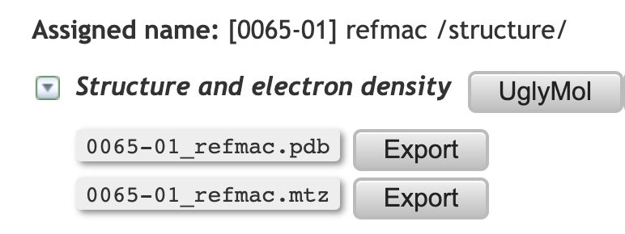
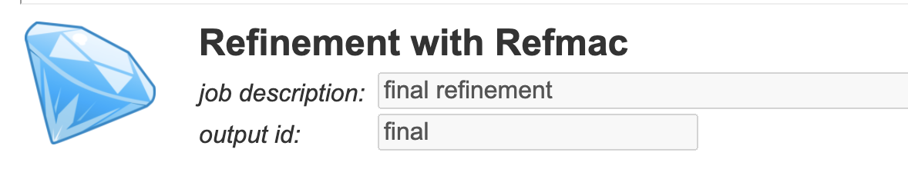
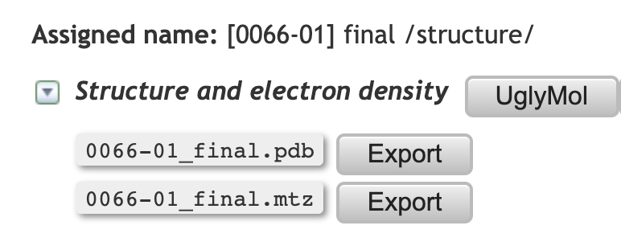
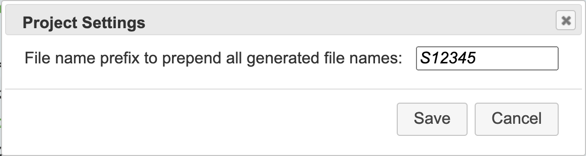
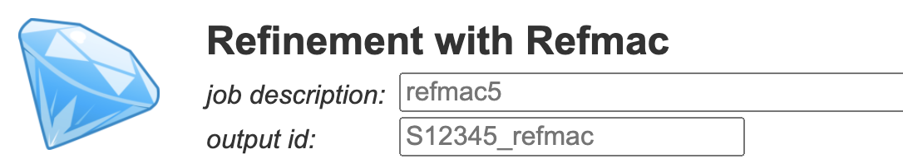

2.5.9. File name customisation¶
CCP4 Cloud generates names for data objects and files automatically, using the following pattern:
[JJJJ-NN] outputID /type/specs
where JJJJ stands for serial number of job that produced the object, NN is serial number of output data item in that job, outputId is data object ID, type is data object type (such as Structure) and specs are optional specifications such as protein, dna, atom and others.
Usually, automatic naming is all what you need, yet, you may find it useful to customise object names for extra annotation and easier data identification in big projects, or when downloading data files for custom processing outside CCP4 Cloud context.
Object names may be customised in two ways.
Note
Changing object names is not possible if task is already running or has finished.
Changing object Id
In most tasks, outputId is customisable and is used for naming all data objects produced by the task (a few exceptions include import tasks, where outputId follows the imported file names and, therefore, is different for different objects). By default, output ID is set to the name of the main program used in the task; it can be found in the Input tab of the Job Dialog. For example, using default naming in Refmac task:
{kind=link}
produces file names like these:
{kind=link}
If output ID is changed before running the task, for example:
{kind=link}
then the resulting file names will look like:
{kind=link}
Note
The job description field was also changed in the above example. This fields corresponds to job title in the Project’s Job Tree. Changing job description is possible for jobs in preparation or finished jobs, but not while a job is running.
Setting the Output Id Prefix
This customisation is useful if results from a series of alike projects are downloaded and processed out of Cloud context. In order to associate downloaded files with a particular project, sequence, ligand etc., output IDs can be prepended with a chosen ID. For doing this, choose Project settings item from the Main menu if the Project page. The following prompt will appear:
{kind=link}
after which the default output id will be automatically prefixed with the chosen value, for example:
{kind=link}
Note
Automatic prefixing will work only for newly created (not cloned or already created) jobs.
For extra convenience, automatic prefixing with project ID may be set in My Account page (look for Use project name as default prefix checkbox in Preferences), in which case it will be applied to all projects until cancelled.